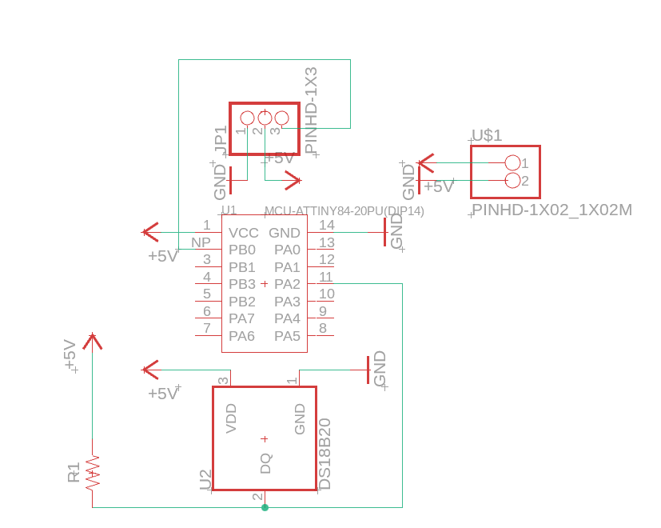
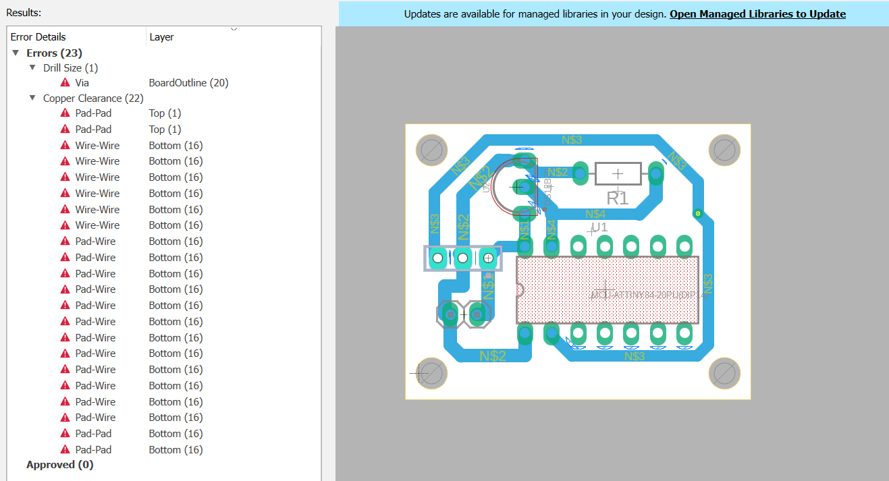
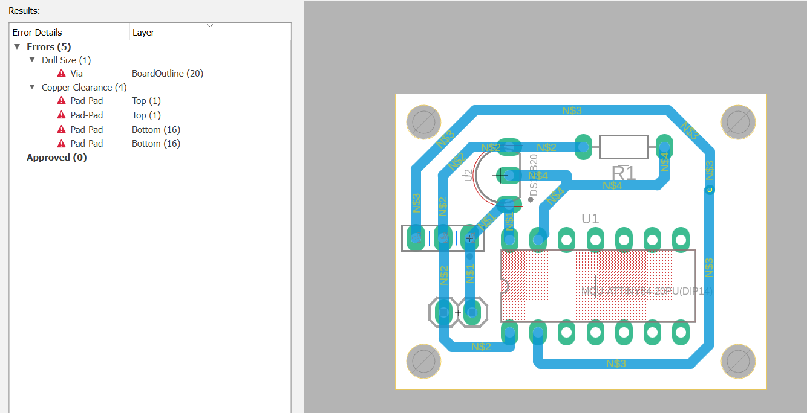
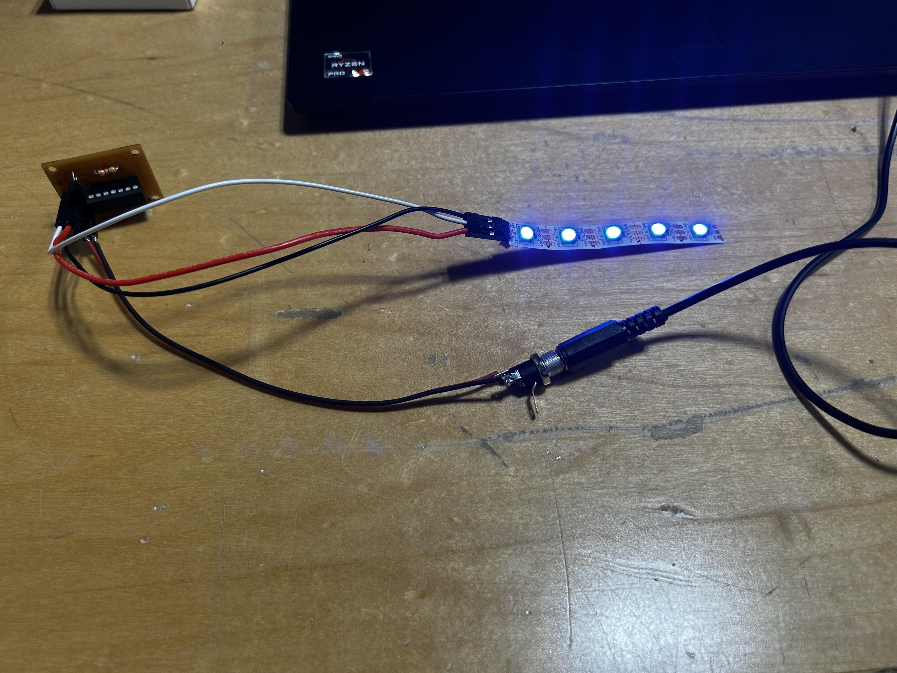
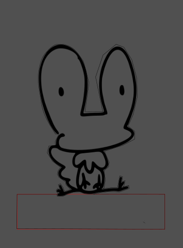

soph week 2/3 - 2/7
should finish my lightbox by next week. just a few more things to do.
schematic
just a simple schematic. while preparing to mill my pcb, mr. christy suggested that using power and ground symbols would help clean up my schematic. i also ran into some issues during the milling process because i used incorrect components, as i hadn’t taken the time to set up an electronic library.
pcb errors
the image above shows my pcb with several errors. the primary issue was that the traces were too thick, leaving insufficient clearance between components. although i could have enlarged the pcb to resolve these problems, i preferred the compact design and opted to reduce the trace width to 35mils instead of 50mils.
after addressing those errors, five new ones appeared. these were caused by using the wrong components, as i hadn’t properly managed my electronic library (as mentioned earlier). once i fixed this, all errors were resolved, and the pcb was ready for milling.
once the pcb was milled, most of my time was spent crimping the power and ground wires and replacing the neopixel with a lightstrip. i also designed a power mechanism to supply energy to the board. unfortunately, there were no aux connectors available, so adding an aux power option wasn’t possible.
after milling my pcb, i spent most of my time crimping the power and ground wires together, while also swapping the neopixel to a lightstrip. following this, i created a power mechanism in order to power up my board. sadly, there were no aux connectors, so making an aux connector to power my board wouldn’t have been possible.
acrylic piece
with the pcb complete, the final steps are to 3d print the box and finish the acrylic piece. i’ll start printing the box soon, as i can work on the acrylic piece simultaneously. by the end of next week, everything should be ready for assembly.